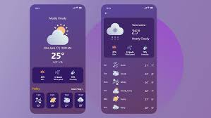

1. Calculator Application
This is a simple yet fully functional calculator I built using HTML, CSS, and JavaScript.
It performs basic arithmetic operations like addition, subtraction, multiplication, and division.
I learned event handling, DOM manipulation, and how UI and logic come together in a real application.
Designing the interface helped me improve my front-end design skills.

2. Weather App
I developed a weather application that fetches real-time weather data using an API.
You can search for any city and get instant information about temperature, humidity, and weather conditions.
This project taught me how to work with APIs, JSON data, and asynchronous JavaScript (fetch and promises).
It was a major step in understanding real-world dynamic web applications.

3. Landing Page (Web Design Project)
I created a modern and visually clean landing page using only HTML and CSS.
This project helped me learn layout design, typography, spacing, responsive elements, and color combinations.
It is one of my best design-focused projects and helped me understand how professional websites structure their sections.